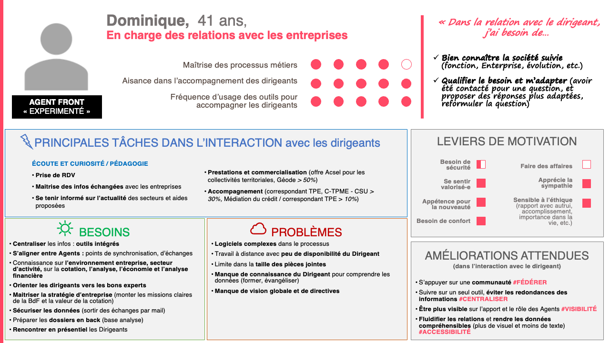
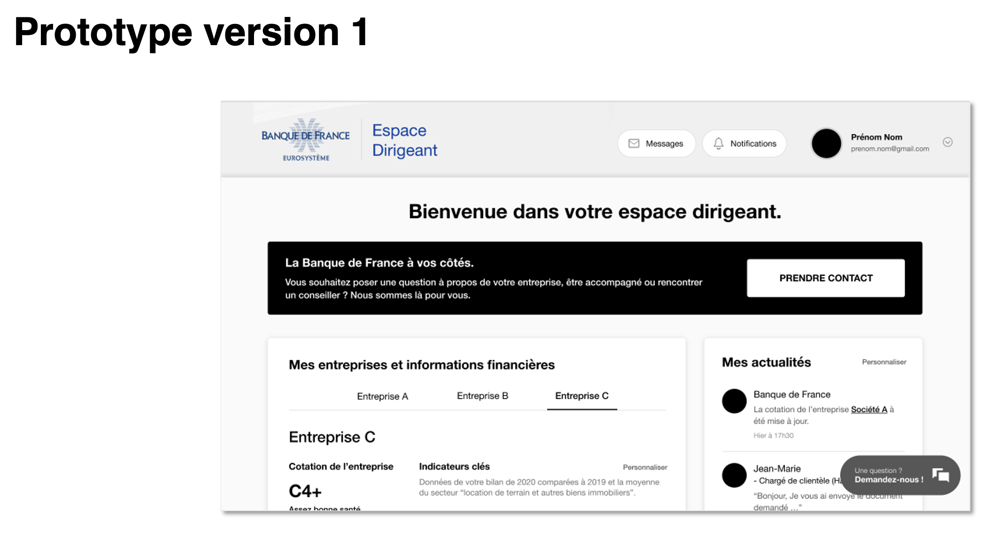

Espace dirigeant
Client : Banque de France
Années : 2022 (cadrage) - 2023/2024 (tests et suivis)
Contexte
Parmis ses missions, La Banque de France est en charge d'effectuer une cotation pour les entreprises dont le bilan dépasse un certain seuils (750k euros annuels avant 2024), cette cotation est primordiale puisqu'elle est consultée par les organismes bancaires et influe, par exemple, sur l'obtention et les modalités de crédits. La gestion en est couteuse avec des centaines de milliers de lettres envoyées dont un pourcentage non négligeable est en échec de distribution, augmentant ainsi les coûts. Elle souhaite digitaliser les échanges pour améliorer le service et réduire les coûts opérationnels.
Au centre de la relation entre les entreprises et la Banque de France se trouvent les agents de la Direction aux Entreprises, présents dans toute la France, interlocuteurs privilégiés et disponibles toute l'année pour les accompagner et conseiller. Leurs missions vont au delà de la cotation : aide dans la relation avec les banques (mediation, refus de création de comptes, etc.), les diagnostics financiers avec des outils dédiées ainsi que des conseils et mises en relation pour accompagner les entreprises dans leur développement, à l'international par exemple.
J'interviens dès le lancement du projet pour aider les équipes de la Direction aux Entreprises à structurer l'expérience et la valeur optimale du produit pour les entreprises ainsi que pour les agents Banque de France.
La démarche de cadrage sera menée en sprints de 2 semaines sur une durée de 4 mois avec 2 sponsors principaux (en lien avec la direction de la Banque), deux Product Owners, un Business Owner et un Tech Lead.
L'équipe UX est composée de 2 designers.
Aligner, prototyper et vérifier
La direction des entreprises dispose déjà de nombreuses informations sur les entreprises, c'est leur coeur de métier, et nottament via une étude menée par l'institut CSA qui a testé l'interêt d'un futur espace dirigeant avec 470 interviews par téléphone. A partir de cette enquête, la direction des entreprises à créée un cahier des charges qui définit les grandes fonctionalités et opportunités de l'espace dirigeant.
Suite à l'analyse de l'étude CSA, la démarche UX proposée a été de travailler sur un prototypage rapide pour tester le concept et vérifier les hypothèses formulées du cahier des charges.
La première étape a été de mener des ateliers (8) de co-conception avec les équipes de la direction aux entreprises pour définir les principales populations cibles, la vision initiale du futur portail avec un "elevator pitch" partagé par les différentes parties prenantes et un prototype synthétisé et priorisé d'après les propositions individuelles puis collectives.

Au vu de l'importance de la relation entre les agents opérationnels et les entreprises, l'équipe UX a proposée d'inclure cette population pour vérifier la vision de la direction sur des écarts potentiels de valeur. Ce sont donc 5 ateliers thématiques supplémentaires menés avec 13 agents représentatifs dans les régions qui ont permit de confirmer les apports de valeurs principaux mais également d'y ajouter des recommandations sur l'intégration des outils actuels pour ne pas créer de nouvelles pratiques redondantes avec l'existant.

Une fois l'ensemble des données analysées, une restitution globale et un atelier de priorisation ont été effectués pour s'assurer de l'alignement tant stratégique qu'opérationnel du futur produit. De cette seconde priorisation, le prototype interactif est conçu pour débuter la première phase de test avec les dirigeants.

Tester et apprendre
Cette première phase de tests sera l'occasion de non seulement tester la performance et la pertinence du prototype mais aussi de s'assurer de la qualité des hypothèses formulées. Pour obtenir des résultats suffisament significatifs, nous avons recrutés plus de 60 dirigeants sélectionnés aléatoirement parmis les profils cibles principaux : 8 tests qualitatifs et 52 tests quantitatifs. Les tests étaient composés de 5 parcours principaux sur prototype et 12 questions sous forme d'enquête pour avoir une complémentarité dans l'analyse.
Le prototype, pour le qualitatif et quantitatif, a été testé sur la plateforme Maze qui enregistre les données de test tel que le temps de session, les clics, les taux de succès, etc. Cela nous donne une vue synthètique et visuelle des résultats.

Les tests ont permit une découverte intéressante avec un impact potentiel sur l'adoption : la connexion exclusive par le service FranceConnect :
- Le compte est personnel et n'était (au moment des tests) pas identifié comme pertinent par les dirigeants comme un choix de connexion professionnel.
- Les dirigeants souhaitent donner un accès à des tiers (comptable, directeur financier, etc.), le compte personnel ne peut pas être partagé dans ce cas.
De plus, la structure d'information du module de contact est considérée comme trop complexe, ce qui créé un taux d'erreur dans la prise de contact trop élevé. La recommandation est faite de simplifier les options de contact à seulement 3 pour réduire le taux d'erreur dans les prochaines itérations.
Enfin, l'apport de l'enquête quantitative et d'un entretien à la suite des tests qualitatifs ont apportés des informations précieuses pour mieux comprendre les attentes et motivations des dirigeants pour un usage optimal du futur espace.


Suite à cette première session, une restitution des résultats et des ateliers stratégiques sont organisés pour définir l'apport de valeur optimal visé par la Banque de France. D'autres itérations seront réalisées pour améliorer les résultats jusqu'à obtenir un score d'utilisabilité suffisament élevé et une vision de type MVP.

Stabilisation de vision et beta tests
L'année 2023 sera l'occasion de stabiliser le MVP, les modules fonctionnels sont priorisés et répartis dans les différents lots de l'application pour un développement en sprints et des ateliers fonctionnels et organisationnels servent à identifier et créer les nouvelles pratiques internes requises pour que l'espace dirigeant soit efficace et s'intègre de manière fluide dans les activités des agents.
Durant l'année, trois sessions de beta tests sont organisés sur l'espace dirigeant dans une version de test et avec les données réelles des dirigeants. La nature sensible des informations affichées et des situations individuelles m'ont conduites à choisir un test qualitatif par "proxy", les agents sont en charge de faire passer les tests d'après un protocole fournit. Cette approche, quoique peu orthodoxe, repose sur l'engagement des agents de la Banque dans leur contacts réguliers avec les entreprises qui est une force pour l'organisation des tests. Toutefois il m'a fallu anticiper un risque de biais élevés de par la relation particulière entre l'institution, ses agents et les entreprises : j'ai donc mis en place une formation accélérée à grande échelle avec les agents (près de 20 participants) sur les tests utilisateurs. Pour garantir la neutralité, le test était divisé en deux grandes étapes avec l'aide d'un support standardisé :
- Une phase d'observation avec découverte par les utilisateurs
- Une phase de test basée sur des tâches à réaliser
Le support standardisé permet de ne pas oublier les élément importants : fonctionalités utilisées, difficultés rencontrées, temps de completion des tâches, erreurs, notes de satisfaction et difficulté des tâches, etc. Les agents avaient également un support d'information qui récapitule toutes les informations utiles sur le déroulé d'un test et les bonnes pratiques.
Grâce à cette approche, les agents ont réalisés 61 tests dans la première session et plus de 40 dans les sessions 2 et 3.


Element central de l'expérience utilisateur : les tests ont factualisés les faibles performances des temps de chargement qui sont un impact significatif dans la satisfaction, des actions correctives ont été prises avec l'objectif d'être en dessous des 5s de chargement dans les cas extrèmes (plus de 15 entreprises dirigés par la même personne).
Lancement et suivi de l'expérience
La première version de l'espace dirigeant est lancée fin mars 2024.
Une équipe dédiée est mise en place pour le suivi de l'expérience via les analytics et notations de type CStat intégrées directement dans l'espace dirigeant. J'ai proposé une grille d'analyse, basée sur le modèle HEART de Google, à l'équipe afin qu'ils puissent suivre les indicateurs sur une fréquence mensuelle :
- Nombre de nouveaux utilisateurs
- Nombre de visites uniques et taux de rétention
- Temps de session et pages/fonctionalités utilisées
- Taux et temps de completion des produits disponibles sur le site
- Notes de satisfaction des parcours du site et score NPS